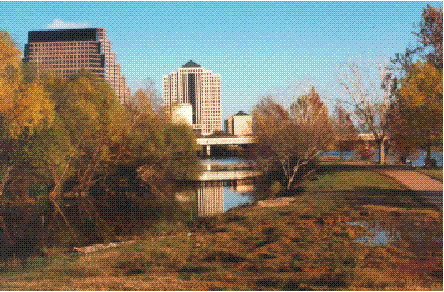
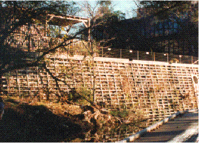
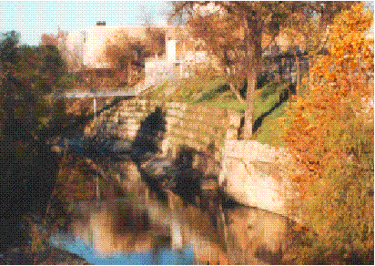
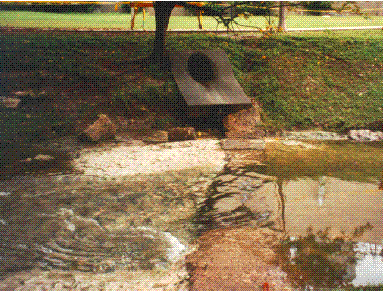
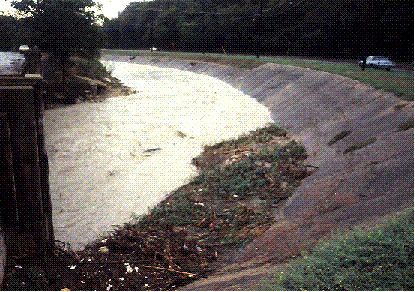

Floodcontrol Measures

The channel of Shoal Creek has been altered substantially where
it enters Town Lake (the Colorado River) in Austin, Texas. At its mouth,
Shoal Creek is diverted into this side channel to slow the velocity of
outflow and catch sediment.

Concrete reinforcement is used in this section of the bank along
the 700 block of Shoal Creek. Office and residential structures have been
built right up to the stream's edge along this section of the creek even
though it is prone to flash flooding.

Here rip-rap is used to stabilize the banks along the 100 block
of Shoal Creek. Rip-rap consists of stones piled into wire-mesh frame.
At this point, Shoal Creek flows between a power plant and one of Austin's
water filtration plants. The filtration plant is visible on the right of
the photograph.

A check dam along the 2400 block of Waller Creek. Such small dams
are used to slow waterflow and maintain waterlevels along short sections
of the stream channel.

Created by Katrin Molch, October 1995. Last revised 21 January 1998.
RRR